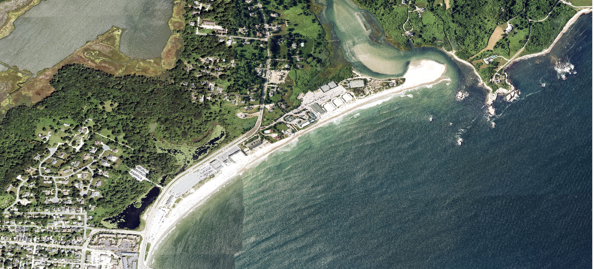
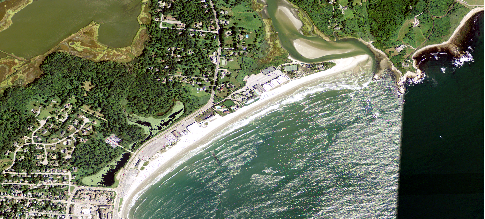
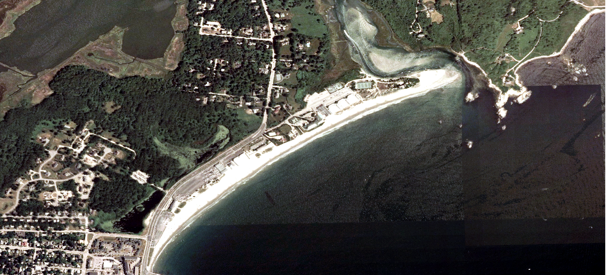

Some initial things to note are that the land use stays almost exactly the same through all of the years. The biggest change is in the beach and estuary morphology. I took a class on coastal systems while I studied abroad in Australia and I find it interesting to see similar concepts applied here. You can see that by 2012 there isn’t much change in the beach or estuary. The tide is farther out in the 2012 image which might make the beach appear larger but it is the same. The sand barrier in the estuary is thinning which could be caused by a decrease in sediment input coming from the lake. You can see the lake in the top left corner of the image. By 2023 you can see that the sand barrier of the estuary has become much larger. This means more sediment input from the water flowing out into the ocean. Over time this could become a closed estuary or a partially closed estuary, where water only comes in from the ocean at high tide. This is one of the later stages of estuary development. You can also see that there are a few more houses built near the middle of the image. The lack of house development is interesting, and perhaps because much of the area may be unstable mangrove or flood zones. There seems to be a loss of beach area which could be caused by high tide or rising sea levels.